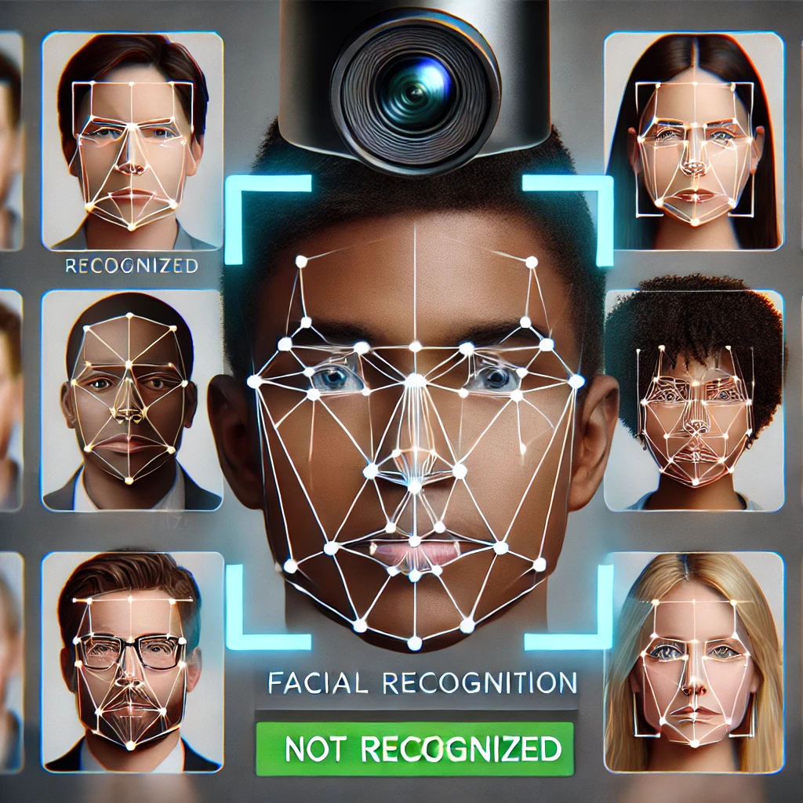
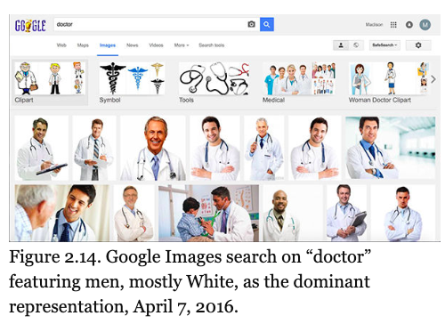

In society’s swift movement toward a digital future, technology plays a critical role in shaping society. From artificial intelligence (AI) to data-driven decision-making, digital tools influence the most critical parts of our lives. From job applications to criminal sentencing and healthcare recommendations. They make decisions for us in the most critical areas of life, in which our very existence can be and often is made better or worse by a recommendation or a tool’s unfavorable bias. Digital bias affects millions globally.
Digital bias happens when AI, machine learning, or decision-making systems produce outcomes that favor or disadvantage certain groups. This bias can stem from bad data, prejudiced humans who write software, or systemic inequalities that is reflected in the information AI learns from. As a result, digital bias is reinforcing trust issues, social disparities, and limited opportunity.
This site investigates the arrival of digital bias and what it can mean for people. Digital bias happens when a person's experience is mediated in a way that's incomplete, unfair, or discriminatory. So much of our lives are lived in and through digital media now, so it can have profound effects. Digital bias isn't just happening unfairly; it's also spreading unfairly. By understanding how digital bias works and the mechanisms through which it spreads, we can work toward creating fairer, more inclusive technology.
What is Digital Bias?
Digital bias refers to systematic errors or prejudices in digital technologies that lead to unfair treatment of individuals or groups. Unlike human bias, which can be based on personal opinions and experiences, digital bias operates on a large scale, affecting thousands or even millions of users at once. It arises when AI-driven systems reflect historical inequalities, lack of diverse training data, or flawed algorithmic design.
One of the most prevalent myths about technology is that it is inherently neutral. Many people think that because computers do what they are told using logic and data, they must be free of bias. This assumption makes a lot of people feel good because it suggests that whatever happens, or doesn't happen, with computers is all our fault, not the machines. In fact, it's a very comforting assumption because it allows many in the tech world to see their work as somehow above society's petty squabbles over values and morals.
How Does Digital Bias Develop?
Digital bias is not something that occurs by chance; it results from datasets riddled with flaws, algorithmic decisions that are less than ideal, and a society that is anything but equal. Here are some of the primary means by which digital bias comes into being:
- Training Data Problems – AI systems learn from past data. If this data is biased, the AI will also be biased. For example, if a hiring AI is trained on decades of job applications, and these applications and the resulting hiring decisions are biased, then the AI will also be biased. It will favor applicants in the same way that humans have favored applicants in the past.
- Design Flaws in Algorithms – AI models are made using mathematical formulas that weigh different kinds of factors to come to a decision. If these formulas give priority to certain characteristics while ignoring others, the results could be, and probably are, skewed. For instance, if an AI is made to predict creditworthiness, and it does so primarily using past loan performance as a measure, its decisions may be unfairly biased against those who have not had the kinds of loan experiences that tend to lead to approval like minorities, if they have been historically been denied loans.
- Insufficient Diversity Among AI Developers – If an AI system is designed by a team that lacks diversity, it may fail to recognize the perspectives and needs of different user groups. This can lead to design choices that unintentionally exclude certain populations.
- Automation Bias – People tend to trust technology, assuming that AI and algorithms are more accurate and objective than humans. This overreliance on AI decisions can cause users to accept biased outcomes without questioning their validity, allowing unfair systems to persist.
Types of Digital Bias
There are multiple forms of digital bias, each impacting AI and automated decision-making in different ways. Understanding these types is essential for identifying and addressing bias in technology.
Algorithmic Bias
Algorithmic bias occurs when AI models generate unfair or discriminatory outcomes due to flaws in the way they were designed or trained. This can happen if the dataset used to develop the algorithm is biased or if the mathematical formula used to process the data places undue weight on certain characteristics.
For example, in 2018, Amazon discovered that its AI-powered hiring tool was rejecting resumes that contained the word “women’s” (e.g., “women’s soccer team”), because it had been trained on past hiring data where male candidates were more frequently hired. The AI learned from historical discrimination and carried it forward.
Data Bias
Data bias occurs when AI training data does not accurately represent the diversity of the real world. If a dataset is skewed toward one demographic or excludes certain groups, the resulting AI system will be inaccurate or unfair.
A well-documented case of data bias is facial recognition technology, which has been shown to have much higher error rates for individuals with darker skin tones compared to lighter-skinned individuals. This is because many facial recognition systems were trained on datasets predominantly composed of lighter-skinned faces. As a result, they struggle to accurately identify people of color, leading to misidentifications and wrongful arrests in some cases.
Design Bias
Design bias occurs when technology is developed without considering the full range of potential users. If a product is tested and optimized primarily for one group of people, it may be less effective for others.
An example of design bias is voice recognition software that struggles with non-native English speakers or people with strong accents. If the software was primarily tested on native English speakers, it may have trouble understanding speech patterns outside that group.
Automation Bias
Automation bias refers to the tendency of humans to over-trust AI decisions, even when those decisions are flawed. Because algorithms are perceived as objective and data-driven, people may assume that AI-generated recommendations are superior to human judgment.
One troubling case of automation bias occurred in the criminal justice system, where some judges used AI-based risk assessment tools to determine the likelihood of a defendant reoffending. Investigations revealed that these AI models often assigned harsher risk scores to Black defendants compared to white defendants, even when their criminal histories were similar. Despite these issues, many judges continued to rely on the AI’s recommendations.
For example, in 2018, Amazon discovered that its AI-powered hiring tool was rejecting resumes that contained the word “women’s” (e.g., “women’s soccer team”), because it had been trained on past hiring data where male candidates were more frequently hired. The AI learned from historical discrimination and carried it forward.
Real-World Examples of Digital Bias
Facial Recognition Bias: Misidentifications and Wrongful Arrests
Case Study: Robert Williams' Misidentification
Background
Robert Williams, an African American man from Detroit, was arrested in 2020 on a mistaken facial recognition identification. Police used facial recognition technology to search through footage of an attempted robbery, and the technology inaccurately matched Williams as the perpetrator. Police only had the AI-generated evidence to work with. Williams spent 30 hours in jail before the authorities discovered their mistake.
Why Did This Happen?
- National Institute of Standards and Technology (NIST) research has found that facial recognition systems misidentify Black and Asian individuals up to 100 times more often than white individuals.
- Most facial recognition systems are trained on predominantly white datasets, making them less accurate for people of color.
- Law enforcement agencies increasingly rely on AI-based matches with no human screening, leading to wrongful arrests.
Impact and Public Response
- Public outcry on a widespread level led to litigation and debate over the morality of deploying AI in law enforcement.
- San Francisco, Boston, and Portland have all outlawed facial recognition technology in police investigations.
Sources and Further Reading
- Buolamwini, J., & Gebru, T. (2018). Gender shades: Intersectional accuracy disparities in commercial gender classification.
- National Institute of Standards and Technology (2019). Face recognition vendor test (FRVT) part 3: Demographic effects.

Facial Recognition Bias – AI struggles to recognize darker skin tones, leading to misidentifications.
AI in Hiring – AI-driven hiring tools have been found to favor male applicants over female ones.
Case Study: Google’s Biased Image Search Results
Background
Google's image search engine in 2013 came under fire when a search for "CEO" produced largely male images, while searches for "nurse" and "receptionist" produced largely female images.
Why Did This Happen?
- Search engines prioritize engagement-based ranking, meaning they reinforce existing stereotypes rather than presenting neutral results.
- Since past media and hiring trends associate CEOs with men, the algorithm detected this trend and replicated it.
- Google later confirmed the issue and implemented manual interventions to improve diversity in search results.
Impact and Public Perception
- The incident posed the question of whether AI should "correct" stereotypes or simply reflect existing world biases.
- Google made changes to its algorithms to promote more diverse search results and prevent perpetuation of harmful stereotypes.
Sources and Further Reading
- Noble, S. U. (2018). Algorithms of oppression: How search engines reinforce racism. NYU Press.
- Eubanks, V. (2018). Automating inequality: How high-tech tools profile, police, and punish the poor. St. Martin's Press.

The role of AI in society continues to expand, and addressing digital bias is no longer an option—it is now a prerequisite for any responsible developer or policymaker. Digital bias is a societal issue with real-world consequences, and it is up to all of us to ensure that the present and future of AI and automation are fair, equitable, and just.